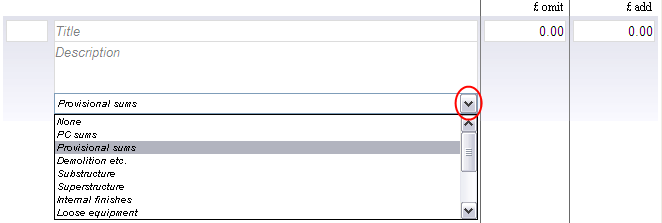

What are Item/Instruction Types and how do I use them? |
Item Types (also known as Instruction Types) are used to help record more detailed information about any unaccounted expenditure.
Each Item on an Instruction can be categorized by selecting one of the predefined Instruction Types. Alternatively, user defined Instruction Types can be added to the list for selection. For more information on how to create these, see Instruction Types.
To use the Item Types on an Instruction, simply click on the Item Type drop down box and select a Type from the list.

Expenditure on a particular job (as detailed in the Instructions) can be categorized in a Financial Statement Report. This can be viewed by selecting Job > Job Financial Statement from the top menu.
See also:
Instruction Types
Reports
Frequently Asked Questions